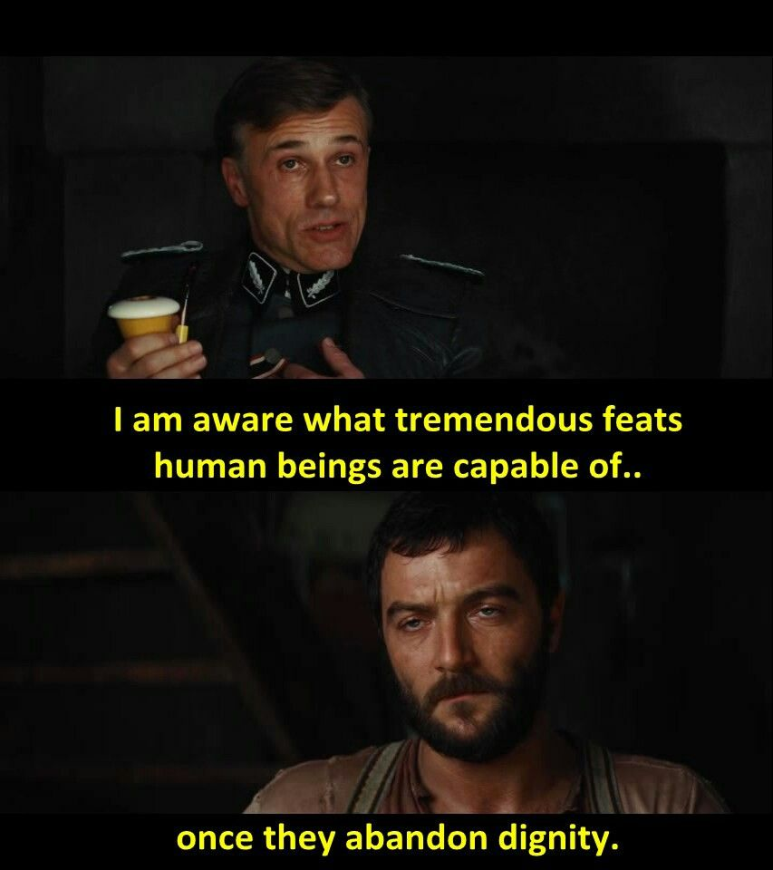

Cilj ove stranice je da prikupi podatke o stanodavcima koji izbacuju stanare da bi uselili ruse ili dižu cene stanarina više nego što je stepen inflacije.
Spisak koji ova forma generiše služi isključivo kao baza podataka nepouzdanih stanodavaca, i biće od koristi mnogima u trenutku kada Rusi odu iz Srbije i rat se završi, a cene stanarina stabilizuju.
U potpunosti podržavam zakon ponude i potražnje, ali u jednom trenutku kada se rat završi, Rusi odu, a cene stabilizuju, pored zakona ponude i potražnje glavnu ulogu u nalaženju stanova treba da ima i pouzdanost stanodavca. Cilj ove ankete je da zaštiti stanare od nepouzdanih stanodavaca koji su skloni da profitiraju koristeći krizu i ratove.
Da popunite upitnik o lošim stanodavcima KLIKNITE OVDE
Da pogledate spisak loših stanodavaca KLIKNITE OVDE
